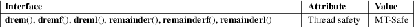

drem, dremf, dreml, remainder, remainderf, remainderl − floating-point remainder function
Math library (libm, −lm)
#include <math.h>
double
remainder(double x, double y);
float remainderf(float x, float
y);
long double remainderl(long double x, long
double y);
/* Obsolete
synonyms */
[[deprecated]] double drem(double x,
double y);
[[deprecated]] float dremf(float x, float
y);
[[deprecated]] long double dreml(long double
x, long double y);
Feature Test Macro Requirements for glibc (see feature_test_macros(7)):
remainder():
_ISOC99_SOURCE || _POSIX_C_SOURCE >= 200112L
|| _XOPEN_SOURCE >= 500
|| /* Since glibc 2.19: */ _DEFAULT_SOURCE
|| /* glibc <= 2.19: */ _BSD_SOURCE || _SVID_SOURCE
remainderf(),
remainderl():
_ISOC99_SOURCE || _POSIX_C_SOURCE >= 200112L
|| /* Since glibc 2.19: */ _DEFAULT_SOURCE
|| /* glibc <= 2.19: */ _BSD_SOURCE || _SVID_SOURCE
drem(),
dremf(), dreml():
/* Since glibc 2.19: */ _DEFAULT_SOURCE
|| /* glibc <= 2.19: */ _BSD_SOURCE || _SVID_SOURCE
These functions compute the remainder of dividing x by y. The return value is x−n*y, where n is the value x / y, rounded to the nearest integer. If the absolute value of x−n*y is 0.5, n is chosen to be even.
These functions are unaffected by the current rounding mode (see fenv(3)).
The drem() function does precisely the same thing.
On success, these functions return the floating-point remainder, x−n*y. If the return value is 0, it has the sign of x.
If x or y is a NaN, a NaN is returned.
If x is an infinity, and y is not a NaN, a domain error occurs, and a NaN is returned.
If y is zero, and x is not a NaN, a domain error occurs, and a NaN is returned.
See math_error(7) for information on how to determine whether an error has occurred when calling these functions.
The following
errors can occur:
Domain error: x is an infinity and y is not a
NaN
errno is set to EDOM (but see BUGS). An invalid floating-point exception (FE_INVALID) is raised.
These functions do not set errno for this case.
Domain error: y is zero
errno is set to EDOM. An invalid floating-point exception (FE_INVALID) is raised.
For an explanation of the terms used in this section, see attributes(7).

remainder()
remainderf()
remainderl()
C11, POSIX.1-2008.
|
drem() |
dremf()
dreml()
None.
remainder()
remainderf()
remainderl()
C99, POSIX.1-2001.
|
drem() |
4.3BSD. |
dremf()
dreml()
Tru64, glibc2.
Before glibc 2.15, the call
remainder(nan(""), 0);
returned a NaN, as expected, but wrongly caused a domain error. Since glibc 2.15, a silent NaN (i.e., no domain error) is returned.
Before glibc 2.15, errno was not set to EDOM for the domain error that occurs when x is an infinity and y is not a NaN.
The call "remainder(29.0, 3.0)" returns −1.
div(3), fmod(3), remquo(3)